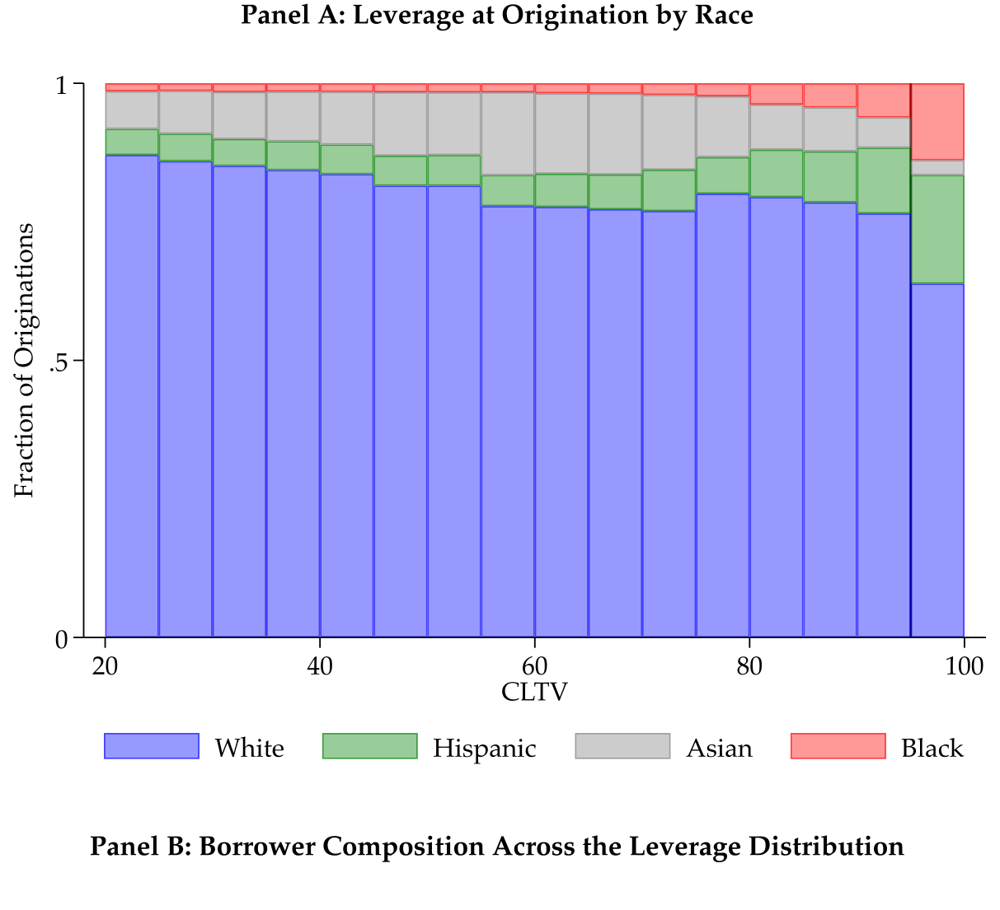
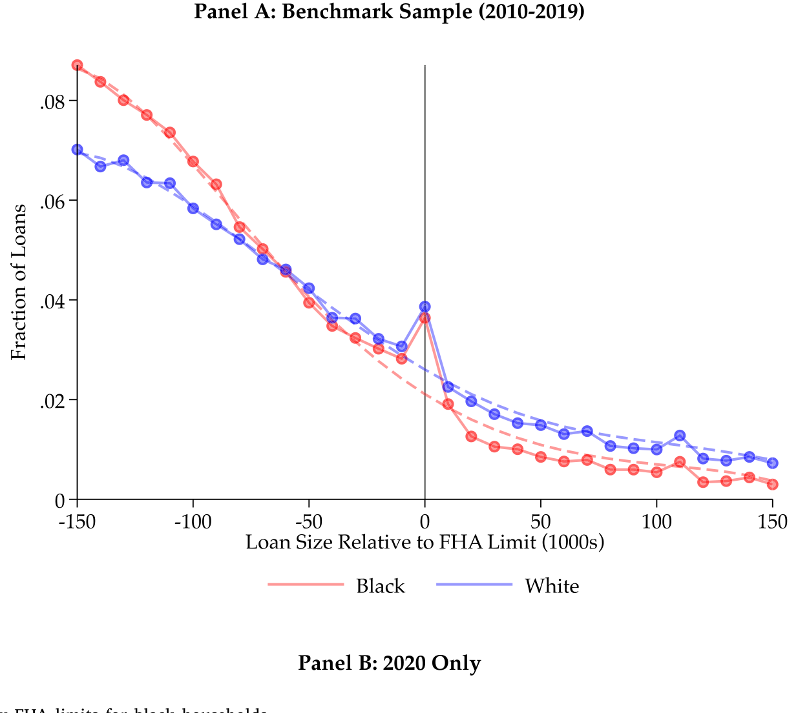
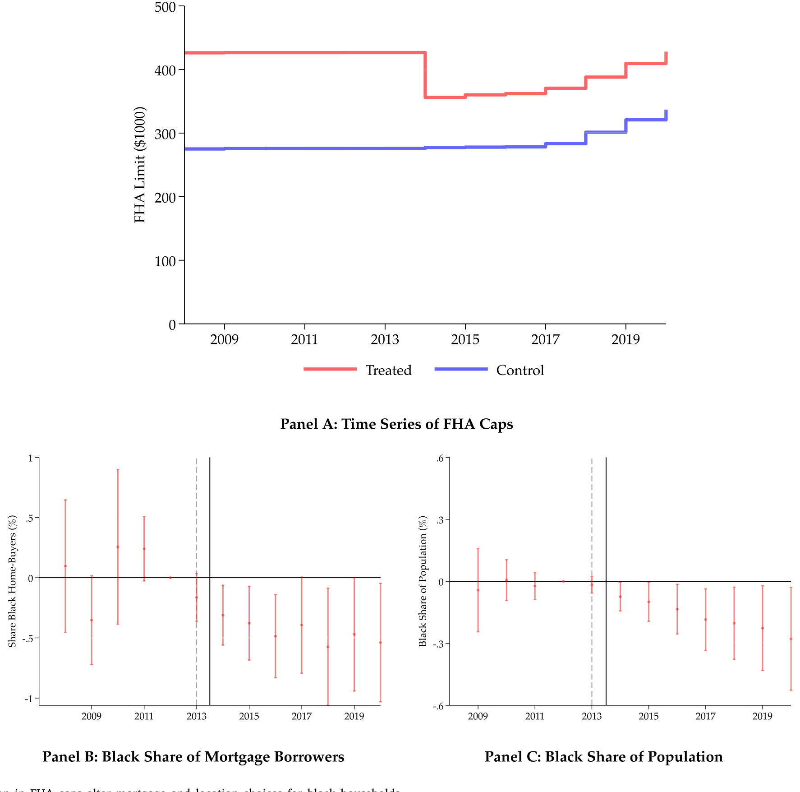
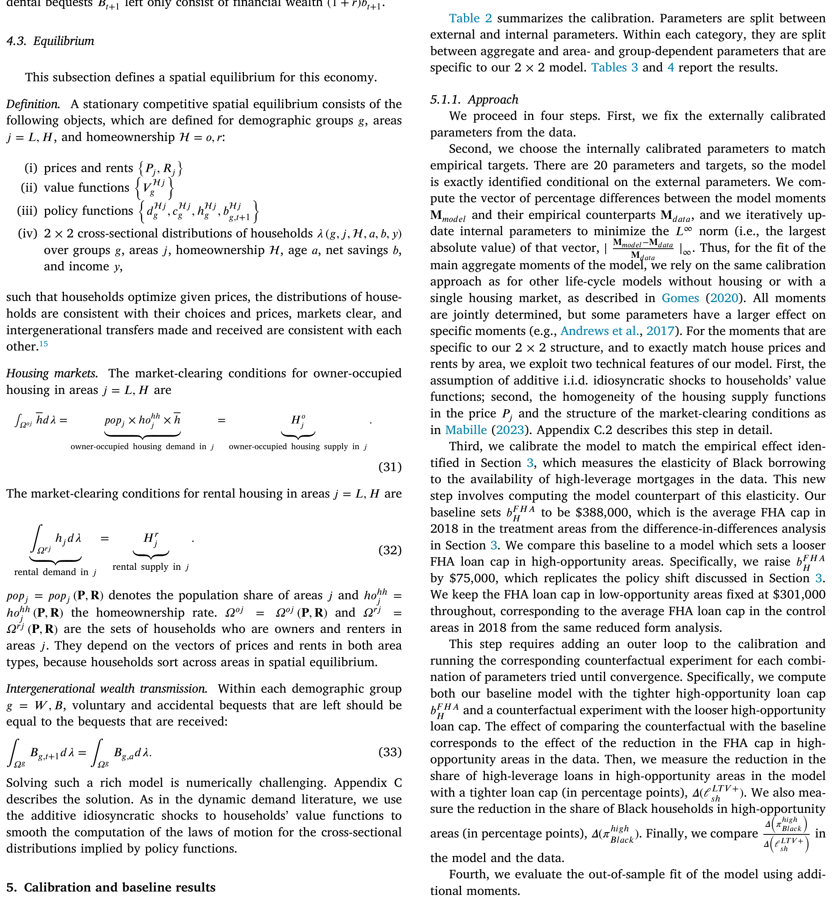
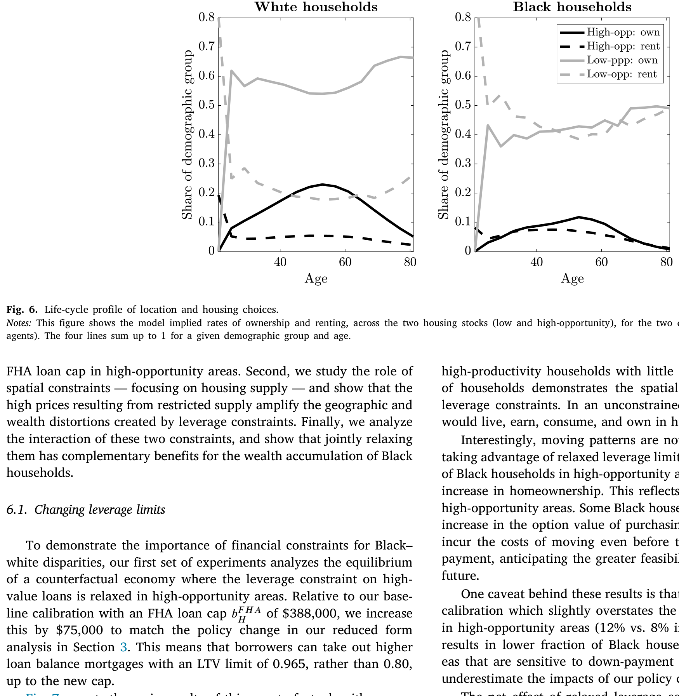
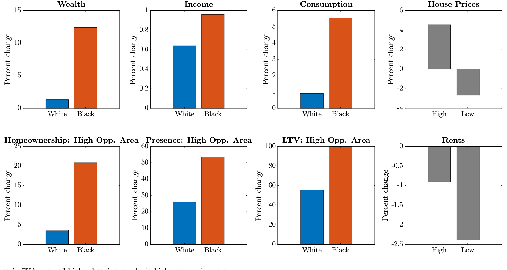
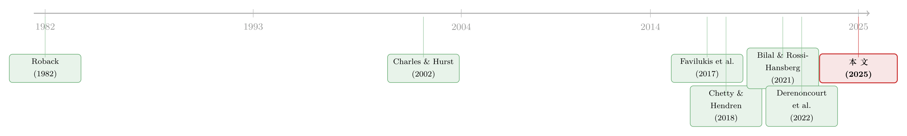

买不起的，其实不是房子，而是机会——首付约束如何把黑人家庭锁在「低机会」的地方
本文读的是 Gupta, Hansman & Mabille (2025, Journal of Financial Economics)：作者用「断点聚束 + 双重差分」识别出一条被忽视的暗线——按揭的首付约束对黑人家庭格外地紧，把他们挡在「高机会地区」之外；再用一个动态生命周期模型把这条空间错配的长期账算清楚——光是放松高机会地区的贷款上限，黑人家庭的平均财富就能高出 9.6%，而这背后的机制，是人，而不是房子，流向了机会。
1 一个被「住房拥有率」遮住的缺口
谈到美国的种族财富差距，大多数人脑子里第一个浮现的数字是「住房拥有率」（homeownership rate）：黑人家庭拥有自有住房的比例长期低于白人。这没错，但它只是冰山露出水面的那一角。
本文一上来就抛出一个更刺眼、也更少被讨论的事实：在那些确实买了房的人当中，黑人借款人背负的杠杆 (leverage) 系统性地更高。
我们看一组数字。作者利用 HMDA（Home Mortgage Disclosure Act）从 2018 年起新增的房价与贷款价值比 (loan-to-value, LTV) 字段，画出黑人和白人借款人在购房时刻的合并贷款价值比 (combined loan-to-value, CLTV) 分布：大约 60% 的黑人借款人，CLTV 高于 95——也就是说，他们的首付不到房价的 5%；而白人借款人里这个比例还不到 30%。黑人借款人 CLTV 的中位数是 96.5，白人是 90。更刺眼的是，这个缺口在购房之后不但没收敛，反而扩大：在 SCF+ 数据里，2016 年仍有按揭的黑人家庭，LTV 中位数约 66，白人只有 52。

Figure 1: The Black–white leverage gap
96.5 这个数字几乎顶到了美国按揭体系所允许的杠杆上限。一大批黑人借款人挤在「能借多少就借多少」的位置上——这强烈暗示：他们是被借款约束顶住了，而不是出于偏好选择了高杠杆。
于是一个自然的问题浮现出来：这个杠杆缺口，到底是「结果」还是「原因」？它会不会只是收入、地理位置这些可观测因素的副产品？作者在附录里做了控制（地理、收入、借款人特征），缺口依然稳健。但他们很坦诚——这不是种族的因果效应，杠杆差异背后是历史形成的财富与资本可得性差距：SCF 数据显示，近 30% 的白人家庭收到过遗产或家庭赠与，而黑人家庭只有 10%。
钱不够，所以首付凑不齐，所以只能把杠杆顶到天花板。问题是——顶到天花板之后呢？
2 真正关键的一步：首付约束把人挡在了「机会」之外
这篇论文真正聪明的地方，是它没有停在「黑人杠杆更高」这个描述性事实上，而是去问：这个约束会把人挤到哪里去？
标准的空间均衡模型（Rosen, 1979；Roback, 1982）有一个乐观的假设：任何「住在某地的好处」最终都会被房价租金抹平，人们可以自由迁徙去套利。但现实是，不同地区在劳动力市场前景、教育质量、代际流动性上存在持久差异（Chetty & Hendren, 2018）。如果首付约束让你根本付不起高机会地区的首付，那么套利就无从谈起——你被锁在了原地。
作者把这个机制叫作「空间贫困陷阱」（spatial poverty trap）：买不起高机会地区的房 → 错过了那里的收入与升值 → 财富积累更慢 → 更买不起首付。一个自我强化的闭环。
那么，怎么把这个抽象的机制识别出来？这里就要请出本文的两套准自然实验。它们都巧妙地利用了同一个制度抓手——联邦住房管理局 (Federal Housing Administration, FHA) 的贷款规则。
FHA 担保的按揭有一个诱人的特点：首付只需 3.5%，远低于常规按揭的 20%。但天下没有免费的午餐——FHA 贷款有一个最高额度上限（loan cap），只能用来买相对便宜的房子。而这个上限是逐年、按县设定的。换句话说，同一栋房子的「首付要求」会因为它落在 FHA 上限的哪一侧而骤然跳变：在上限之下，3.5% 就够；一旦房价（贷款额）越过上限，首付要求瞬间跳到 20%。
这个「跳变」就是识别的金矿。
3 识别策略之一：他们都挤在了那条线上
第一套策略是断点聚束估计 (bunching estimator)。
直觉很简单：如果首付约束对黑人借款人格外地紧，那么当 FHA 上限就在眼前时，他们会有强烈的动机把贷款额精确地卡在上限上——再多借一块钱，首付要求就从 3.5% 跳到 20%，对一个本就缺现金的家庭来说是天壤之别。于是我们应该看到：黑人借款人在 FHA 上限处「聚束」（bunching）的程度，明显强于一个无摩擦的基准。
数据正是如此。黑人借款人在县级 FHA 上限处出现了显著超出预期的「质量堆积」（excess mass），其聚束程度比白人借款人更陡。这说明，相对于一个没有首付摩擦的世界，黑人的借款行为被扭曲得更厉害。

Figure 2: Differential bunching at county FHA limits for black households
聚束证据干净，但它本质上是横截面的。一个更挑剔的读者会追问：聚束多，能不能直接说明「约束放松/收紧会改变购房与居住选择」？我们需要一个时间维度上的冲击。
4 识别策略之二：2014 年那次「没人预料到的」政策回撤
接着，作者找到了一个近乎完美的自然实验。
全球金融危机期间，为了托住摇摇欲坠的房市，FHA 的贷款上限被临时性地大幅调高了。2014 年，这些危机时期的临时措施被回撤——FHA 上限在许多高成本地区骤然下调，意味着这些地方的实际首付要求陡然抬升；而在低成本地区，由于房价本就远低于上限，借款人受到的影响微乎其微。
这就构成了一个漂亮的双重差分 (difference-in-differences, DiD) 设定：处理组是 FHA 上限下调、首付要求实际抬升的高成本地区，对照组是上限变化几乎不影响实际购房的低成本地区；而且这次回撤是不可预见的（unforeseen），缓解了人们提前调整、自我选择的担忧。
结果相当可观：在失去了「高杠杆按揭」这条通道之后，受影响地区新增按揭中流向黑人借款人的份额下降了约 8%。

Figure 4: Reduction in FHA caps alter mortgage and location choices for black households
更耐人寻味的是接下来这一步。一个自然的反应是：买不起就去租嘛。但数据说不——这些潜在购房者并没有转向租赁市场，而是导致了受影响地区黑人总人口的下降。也就是说，首付约束的收紧，不是让他们「在原地从买转租」，而是把他们整个人从这片高机会的土地上挤走了。
而作者紧接着证明，高成本地区恰恰提供了更好的收入前景和更高的考试分数。于是这条逻辑链就闭合了：首付约束 → 黑人被挤出高机会地区 → 失去了那里的收入与人力资本积累机会。
到这里，论文的实证内核已经完整：首付约束不是中性的，它对黑人家庭格外地紧，并且实实在在地改变了他们「住在哪里」。
5 但缩减式证据回答不了的问题，要交给模型
DiD 告诉了我们一个局部、短期的因果效应。可这篇论文真正想回答的，是一个长期、均衡的问题：如果这种空间错配持续一辈子、跨越几代人，它最终对种族财富差距贡献了多少？又有哪些政策能真正缓解它？
这是缩减式证据天然够不着的地方——你没法在数据里观察到「反事实的一生」，也没法把房价的均衡反应内生化。于是，真正关键的一步出现了：作者搭建了一个动态空间生命周期模型 (dynamic spatial life-cycle model)，并且——这是本文方法论上最大的亮点——用前面 DiD 估出来的那个弹性去校准它。
（关于「租还是买、以及用结构模型把住房选择的长期后果算清楚」这一路数，可参见《半套房子：当「租还是买」不再是单选题》。）
模型的骨架
经济体由两类地区构成：高机会地区 (high-opportunity area) 与低机会地区。两类地区里住着一代代风险厌恶的、异质的家庭，分成黑人与白人两个群体。家庭在生命周期里反复做选择：在两类地区中的某一类租房或买房。买房用的是长期、可违约的按揭，受同一个首付约束的约束。
模型里还有一个关键的代际机制：家庭有遗赠动机（voluntary bequests），遗产在同一种族群体内部传给下一代。这一笔设定至关重要——它让「初始财富的差距」能够跨代传递下去，从而解释为什么差距不会像无限期模型预言的那样在稳态中自动消散。
两个群体的差别体现在三处：初始财富、收入过程、以及出生在每类地区的概率。而地区的收入还内生地依赖于当地高生产率劳动力的构成——通过一个集聚外部性（agglomeration externality），高机会地区的高收入，一部分来自「地方的因果效应」，一部分来自高生产率工人的自我筛选（Bilal & Rossi-Hansberg, 2021；Card et al., 2025）。
把最核心的方程拆开看
家庭每期要在「租」与「买」之间取其优，而买房分支受首付约束的硬性约束。这个选择可以写成一个贝尔曼方程（Bellman equation）的形式：
而整篇论文的「制度心脏」，就藏在首付比例 \(\theta_j\) 的这个分段函数里。它精确复刻了 FHA 的上限结构：
$$ \theta_j = \begin{cases} 0.035 & \text{if } m \le \bar{m}_j \\[4pt] 0.20 & \text{if } m > \bar{m}_j \end{cases} $$
这里 \(\bar{m}_j\) 是地区 \(j\) 的 FHA 贷款上限。读这条公式时要体会它的「不连续」：当家庭想买的房子足够便宜、贷款额落在上限 \(\bar m_j\) 之下时，只需 3.5% 的首付；可一旦想买的房子越过上限，首付要求瞬间跳到 20%。对一个手里现金本就紧张的低财富家庭来说，这道台阶就是一堵墙——它决定了高机会地区那些「贵一点的好房子」对你而言是「够得着」还是「彻底无缘」。
校准：让模型去「重做一遍」那场自然实验
模型怎么校准？这是本文方法论上最值得学的一招——间接推断 (indirect inference)。
作者没有满足于匹配几个静态矩，而是在模型里把 2014 年那场 FHA 上限变化原样重演了一遍，要求模型复现出与 DiD 实证中相同的那个「黑人借款对首付约束的弹性」。换句话说，他们把一个实证识别出来的、且在模型中本身内生的弹性，当成校准目标。这一步在数值上极具挑战，但它大大提升了模型的可信度——这也是作者反复强调的、对这一类空间宏观金融模型的方法论贡献。

Table 2: summarizes the calibration. Parameters are split between
校准的「试金石」在于：模型在校准时并没有去瞄准种族间的财富差距，但跑出来之后，它却能匹配种族间的杠杆差异，并解释了种族财富差距的 75% 以上。一个没被喂进去的矩，被模型自己「吐」了出来——这是结构模型最有说服力的时刻。
6 反事实：放松约束，到底是谁在受益、又通过什么受益？
有了这个可信的「实验室」，作者跑了三组反事实。
第一组：放松首付约束。 在高机会地区抬高 FHA 上限，让借款人能用 3.5% 的首付买更贵的房。结果：黑人家庭平均财富高出 9.6%，财富、收入、住房拥有率、杠杆、消费上的黑白差距全面收窄。为了让你体会这个效应有多大，作者给了一个参照系——要想靠「降低搬迁成本」达到同等的黑人财富增幅，得把搬去高机会地区的成本砍掉 15%。

Figure 7: reports the main results of this counterfactual, with a more
但这里有一个至关重要的细节，也是全文的点睛之笔：财富的增加，主要不是因为「黑人借了更多钱买房」这件事本身，而是因为一批黑人家庭因此得以迁入高机会地区。由于个人收入与地方收入之间存在互补性，高生产率的黑人家庭在这组反事实里受益尤其明显。论文的核心洞见在此凸显：杠杆约束之所以伤人，是因为它造成了空间错配，而错配损害的是收入前景与财富积累——重点是「机会的可达性」，而不是「拥有住房」本身。
第二组：放松空间约束。 把高机会地区的住房供给提高 10%（相当于放松分区管制），房价随之下降，更多黑人家庭得以迁入或更便宜地租住——黑人平均财富提高 1.7%。值得玩味的是，对白人家庭，房价下跌反而让他们的财富增加得更少（因为他们本就更多地持有这些房产），于是种族差距进一步收窄。
第三组：两手一起抓。 同时放松贷款上限并增加 10% 的住房供给。这里出现了一个漂亮的互补效应（complementarity）：提高住房供给，恰好抵消了「放松杠杆会推高房价」这个副作用。结果，黑人家庭平均财富增加 12.4%——大于两组单独政策效应之和（11.3%）。1 + 1 > 2，因为在组合政策下，黑人家庭在高机会地区的存在感大幅提升。

Figure 9: Increase in FHA cap and higher housing supply in high-opportunity areas
别误读成「无限放松杠杆就是好」。作者很克制：把 FHA 首付从 3.5% 进一步降到 1%，违约率会上升，而且主要集中在低机会地区。相反，在高机会地区放松上限（比如把 FHA 上限提高 $75,000）反而改善了空间配置、降低了平均违约率。结论因此是：放松杠杆的「地点」比「幅度」更重要——在低机会地区放杠杆，最终伤害的是少数族裔的财富与信用。
7 文献脉络
这篇论文站在三条文献的交汇处。
第一条是空间均衡的老传统：Rosen (1979)、Roback (1982) 奠定了「地区优势会被迁徙套利掉」的基准，而 Chetty & Hendren (2018)、Bilal & Rossi-Hansberg (2021) 等新一代工作则反复证明，「地方」本身就是一种持久的、可定价的资产——机会在空间上并不均匀。
第二条是种族财富差距与住房的复兴浪潮：从 Charles & Hurst (2002) 强调父母转移支付在黑白住房行为差异中的作用，到 Derenoncourt et al. (2022) 用历史微观数据刻画 1860 年以来的种族财富鸿沟，再到 Bartlett et al. (2022) 在金融科技时代里检验按揭定价中的歧视。
第三条是含异质家庭、不完全市场的宏观金融生命周期模型，尤其聚焦抵押约束与不平等：Favilukis, Ludvigson & Van Nieuwerburgh (2017)、Kaplan et al. (2020) 都强调了首付约束如何把穷人挡在住房之外、从而加剧不平等。

本文的位置很清楚：它把第一条的「空间」、第二条的「种族」、第三条的「首付约束」拧成一股，提出并量化了一个新渠道——杠杆约束造成的空间错配如何持久地拉大财富差距；并且在方法上，第一个用一个实证识别、却在模型中内生的弹性去校准这一类带内生房价的空间模型。
8 评论与延伸（Q&A + 研究方向）
(a) 几个可能的疑问
Q：杠杆缺口会不会只是「黑人收入低、所以首付凑不齐」的同义反复，根本谈不上独立机制？
部分是，但不全是。作者在附录里控制了地理、收入与借款人特征后，杠杆缺口依然稳健，说明它不只是当期收入的镜像。更关键的是，缺口反映的是财富与资本可得性的历史差距（遗产、家庭赠与），而这恰恰是收入控制不掉的东西——SCF 里白人家庭收到遗产的比例（约 30%）是黑人（约 10%）的三倍。
Q：2014 年的 FHA 上限回撤，真的「外生」吗？会不会高成本地区本身就在经历别的冲击？
这是 DiD 的核心担忧。作者的辩护有两点：一是这次回撤是不可预见的政策反转，削弱了提前自我选择；二是对照组（低成本地区）的实际首付要求几乎没变，构成了合理的平行趋势参照。但读者仍可担心：高成本地区在 2014 年前后是否还叠加了房价复苏、信贷周期等并发冲击——这需要看更细的事前趋势检验。
Q：为什么强调「机会」而不是「住房拥有」？这两者不是高度相关吗？
这正是本文最反直觉、也最重要的结论。第二、三组反事实显示：单纯增加租赁住房供给也能改善空间错配、提高黑人收入，但对黑人财富的提升和住房拥有率的影响要小得多。真正让财富长期增长的，是人迁入了高机会地区（拿到更好的收入与升值），而不是「拥有一套房」这个标签本身。
Q：模型说解释了 75% 以上的财富差距，可信吗？会不会是过度拟合？
之所以有说服力，是因为财富差距这个矩没有被列为校准目标——它是模型在匹配了杠杆弹性、收入、住房拥有率、迁移率等矩之后「副产出」的。一个未被瞄准的矩能被复现，是结构模型可信度的强信号。当然，75% 也意味着还有近四分之一来自模型之外（如显性歧视、信用评分、税收评估等）。
Q：FHA 只是众多按揭渠道之一，结论会不会被「FHA 的特殊性」绑架？
作者明确回应：即便完全不依赖 FHA，单是 3.5% 的首付要求，就已经让黑人家庭的财富分布把一大块房产挡在门外（附录图 A.I）。而且 FHA 借款人危机后的平均信用分一直高于 660，说明很多人本可走常规渠道——他们要的是杠杆，不是 FHA 本身。所以 FHA 只是识别用的「制度抓手」，机制本身是普适的首付约束。
Q：如果存在显性的种族歧视（比如按揭利率更高），会不会推翻模型结论？
作者做了稳健性：在模型里引入按揭利率的种族歧视后，放松 FHA 上限的效果几乎不变。这说明空间错配造成的持久财富差距，即便在没有金融体系显性歧视的情况下也会出现——首付约束这个「中性」规则，叠加初始财富差距，就足以生成种族鸿沟。
(b) 几个可能的研究问题与提案
1. 把这套「空间错配」逻辑搬到公司债/信用市场的「资本可达性」上。 - 【经济故事】本文的核心是「首付约束 → 空间错配 → 长期差距」。类比地，中小企业或某些地区的发行人，是否因为「初始抵押品/资本不足」而被挡在低成本融资渠道（如公开债券市场）之外，被迫长期依赖更贵的银行贷款，从而陷入「信用贫困陷阱」？ - 【可行性】中。需要 Mergent FISD + Compustat 匹配发行人首次进入债券市场的门槛，识别可借鉴某种规模/评级的监管断点。难点在于找到一个像 FHA 上限那样干净的外生跳变。
2. 外资持有人会不会缓解还是加剧这种「机会错配」？ - 【经济故事】在住房市场，外部资本（如机构买家）涌入高机会地区可能进一步推高房价、把本地低财富家庭挤出——这与本文「放松供给可降房价」的方向相反。把「外资/机构持有人」作为一个新的需求冲击放进本文模型，看它对种族财富差距是雪上加霜还是无关。 - 【可行性】中。需要 CoreLogic/Zillow 的机构购房数据 + HMDA，识别可用机构买家集中度的地区差异。doable，但均衡房价反应需要结构模型支撑。
3. 首付约束放松对二级市场「流动性」与违约定价的外溢。 - 【经济故事】本文发现「在低机会地区放杠杆会推高违约」。那么这些高 LTV、高违约风险的 FHA/Ginnie Mae 池子，在二级市场的定价与流动性是否系统性地反映了这种空间异质性？投资者是否对「机会地区」与「低机会地区」的同等评级 MBS 区别定价？ - 【可行性】中偏高。需要 Ginnie Mae 池子层面数据 + 地区机会指数（Opportunity Atlas），可做横截面利差回归。数据可得，识别清晰。
4. 共签/家庭转移作为「绕过首付约束」的替代渠道，是否复制了种族差距？ - 【经济故事】既然首付约束的根子是「初始财富/家庭资本」，那么家庭共签、父母赠与就是绕过它的钥匙——但这把钥匙在种族间分布极不均。本文与《把爸妈的收入也算进按揭：一纸「共签」，如何同时打开和收紧一扇门》正好互补：前者讲制度约束，后者讲家庭支持。 - 【可行性】高。HMDA 已有共同借款人信息，可直接检验共签率的种族差异及其对 CLTV、地区选择的影响。
9 我的判断
这是一篇我很喜欢的论文，它的贡献是「把一个被住房拥有率叙事掩盖的事实（杠杆缺口）→ 一个干净的因果识别（FHA 双重断点）→ 一个能算长期账的结构模型」三段式地打通了。最漂亮的一笔，是用实证识别出来、却在模型中内生的弹性去校准——这给一整类带内生房价的空间宏观金融模型提供了一个可复用的纪律。而它最有政策含义的结论——「要给的是机会的可达性，而不是无条件地放杠杆、推拥有率」——既反直觉，又站得住脚。
我对识别的担忧主要有两点。其一，2014 年 FHA 回撤期恰逢房市从危机中复苏、信贷条件整体变化，处理组（高成本地区）很可能同时承受了别的冲击，8% 的份额下降里有多少是「纯首付约束」效应，仍取决于事前趋势的细节。其二，模型解释了 75% 的财富差距固然亮眼，但这也把显性歧视、信用评分、税收评估等渠道压缩进了残差——而这些在现实中绝非小事。
后续我最想看到的，是把「机会的可达性」这个概念外推到信用市场：低财富的发行人、低机会的地区，是否同样因为「资本可达性」的初始差距而被锁在更贵的融资渠道里？如果本文的空间贫困陷阱在住房之外也成立，那它就不只是一篇关于种族住房差距的论文，而是一个关于「财富如何通过『可达性』而非『偏好』自我固化」的一般性框架。
参考文献
Bartlett, R., Morse, A., Stanton, R., Wallace, N. (2022). Consumer-lending discrimination in the FinTech era. Journal of Financial Economics 143(1), 30–56.
Bhutta, N., Chang, A.C., Dettling, L.J., et al. (2020). Disparities in wealth by race and ethnicity in the 2019 Survey of Consumer Finances. FEDS Notes, Federal Reserve Board.
Bilal, A., Rossi-Hansberg, E. (2021). Location as an asset. Econometrica 89(5), 2459–2495.
Charles, K., Hurst, E. (2002). The transition to home ownership and the black/white wealth gap. Review of Economics and Statistics 84(2), 281–297.
Chetty, R., Hendren, N. (2018). The impacts of neighborhoods on intergenerational mobility II: County-level estimates. Quarterly Journal of Economics 133(3), 1163–1228.
Derenoncourt, E., Kim, C.H., Kuhn, M., Schularick, M. (2022). Wealth of Two Nations: The US Racial Wealth Gap, 1860–2020. NBER Working Paper.
Favilukis, J., Ludvigson, S.C., Van Nieuwerburgh, S. (2017). The macroeconomic effects of housing wealth, housing finance, and limited risk sharing in general equilibrium. Journal of Political Economy 125(1), 140–223.
Gupta, A., Hansman, C., Mabille, P. (2025). Financial constraints and the racial housing gap. Journal of Financial Economics 173, 104142.
Roback, J. (1982). Wages, rents, and the quality of life. Journal of Political Economy 90(6), 1257–1278.